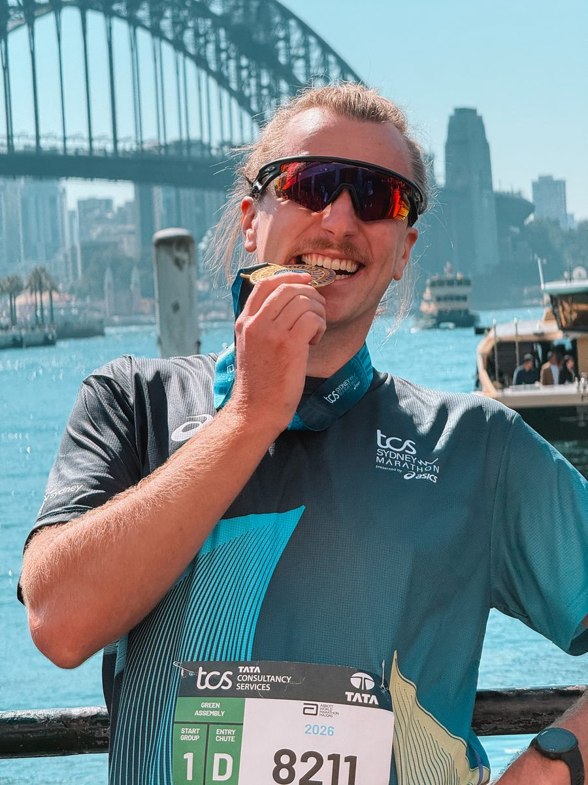
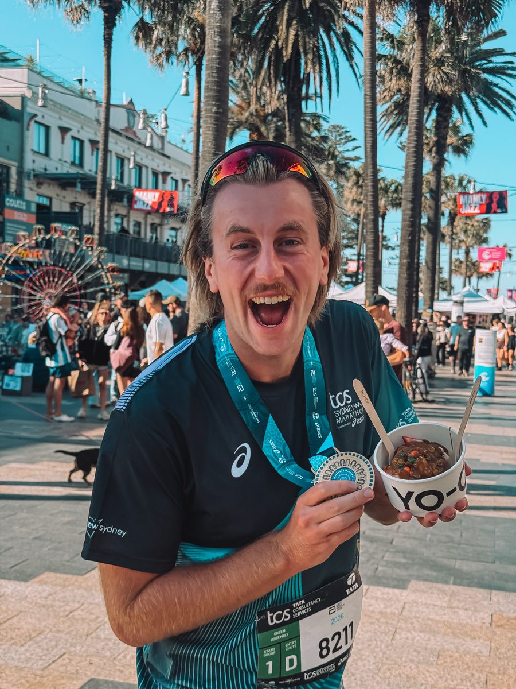
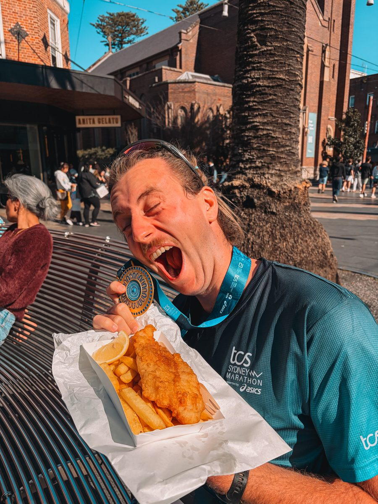

What the Majors are
The Abbott World Marathon Majors are the circuit of the biggest marathons in the world. They stayed at six for years. The circuit has grown twice in a short time: Sydney became the seventh (announced in November 2024, first edition with Major status on 31 August 2025), then Cape Town the eighth, announced in June 2026. So there are eight today.
- TokyoMarch
- BostonApril, the only one where entry depends on a qualifying time
- LondonApril
- Cape TownMay, the newest and the first Major in Africa
- SydneyAugust or September
- BerlinSeptember, the fastest of the eight
- ChicagoOctober
- New YorkNovember, the biggest in the world
The star system, and its catch
It is the most misunderstood point, and it is worth being clear.
The Six Star medal is still tied to the original six: Tokyo, Boston, London, Berlin, Chicago and New York. It has not been extended. Finishing those six gets you the medal, as before.
There is no Eight Star medal. Those who have completed all eight join the Eight Star Hall of Fame, an official recognition, but with no dedicated medal.
The next medal will be the Nine Star, and it is waiting for a ninth race. Shanghai is under evaluation, with a review planned for December 2026. If the marathon is approved, the first Nine Star medals could be awarded in Shanghai in 2027.
In other words, aiming for all eight today means aiming for the Hall of Fame and putting yourself in line for the Nine Star when it arrives.
That is what I am aiming for. Sydney and New York are done. Six to go.
How to get a bib
This is the real issue. For most Majors, demand far exceeds the number of places, and registering is not enough. There are four ways in, and they have neither the same price nor the same odds.
The ballot. Free or almost, open several months in advance, and it is the cheapest route. It is also the one with the lowest odds.
The qualifying time. If you run fast enough on a recognised marathon, some races keep a place for you. Boston only works this way.
Tour operators. They buy bibs in batches and resell them with accommodation and sometimes the flight. It is much more expensive than registration alone, but the bib is guaranteed. That is how I did it for New York.
Charity bibs. You commit to raising a sum for a charity. The place is guaranteed, the commitment is real.
À compléter : les tour opérateurs que tu connais, leurs tarifs, et ce que tu recommandes selon le budget.
Registration dates
Each race has its own calendar, and the windows are short. Miss a ballot opening and you wait another year.
The general logic is simple: most Majors open their ballot in the weeks following the previous edition. Berlin opens after Berlin, Sydney after Sydney. The two exceptions are New York, which opens in February, and Boston, which has no classic ballot.
The calendar for the 2027 editions
| Race | 2027 edition | Registration window | Result |
|---|---|---|---|
| Tokyo | 7 March 2027 | 14 to 28 August 2026 Closed |
18 September 2026 |
| Boston | April 2027 | 14 to 18 September 2026 Qualifiers only |
After closing |
| London | 25 April 2027 | 24 April to 1st May 2026 Closed |
Early July 2026 |
| Cape Town | 23 May 2027 | 10 to 24 June 2026 Closed |
26 June 2026 |
| Sydney | 29 August 2027 | Late September to mid October 2026 Imminent |
Late October 2026 |
| Berlin | September 2027 | Opening early October 2026 Imminent |
Late November 2026 |
| Chicago | October 2027 | Not yet announced Usual timing: late October to mid November |
Mid December |
| New York | November 2027 | Not yet announced Usual timing: three weeks in February |
Early March |
What happens in the coming weeks
Boston, 14 to 18 September 2026. Five days, and it is not first come first served. You need a qualifying time set since 13 September 2025 on a recognised course. The standards are 2:55 for men and 3:25 for women aged 18 to 34. Two new things this year: times set on steep downhill courses are adjusted, and about a thousand bibs are drawn among qualifiers who did not beat the cut off time.
Sydney, late September 2026. Entering the ballot is free. If you are drawn, your card is charged automatically: 280 Australian dollars at the local rate, 330 at the international rate. Set up your account and card before it opens.
Berlin, early October 2026. The ballot stays open for several weeks, until mid November, with results at the end of November. Berlin also has a time based entry, without going through the ballot.
Chicago, late October 2026. Applying costs nothing, you are only charged if you are selected.
New York, February 2027. The hardest. The 2026 edition received a record 240,000 applications.
Three habits that save you losing a year
Create your runner account before it opens. For several races, you need a validated profile to apply. Doing it on the day wastes time for nothing.
Do not rush on the first day. None of these ballots is first come first served. Applying on the first morning or the second to last day gives exactly the same odds.
Keep a valid card until the result. Several races charge automatically if you are drawn. A card that expires between applying and the draw can cancel your place.
These dates change every year. Always check at the source before booking a flight: the official websites are just below.
New York
The biggest marathon in the world, in early November, and the only one that crosses all five boroughs of the city.
How I got my bib. I went through a French tour operator, Ouest Voyage, part of the Havas Voyage group. It was the way to make sure I had a place: in the ballot, the odds are very low.


À compléter : l'année, ton temps si tu veux le donner, le prix du séjour avec le tour opérateur, et ce que vaut le parcours.
I told the whole story on video, and it is in my New York guide.
Sydney
The newest on the circuit, and therefore the one that is still easiest to get into. The course crosses the Harbour Bridge and finishes in front of the Opera House.
I ran it in 2026, a few weeks after arriving in Australia for my working holiday.



À compléter : comment tu as eu ton dossard, le prix de l'inscription, le parcours, et ce que ça change de courir un marathon quelques semaines après avoir changé de pays.
The official websites
Always check dates and prices at the source. Registration rules change from one year to the next.
The circuit: worldmarathonmajors.com
Tokyo: marathon.tokyo
Boston: baa.org
London: londonmarathonevents.co.uk
Cape Town: capetownmarathon.com
Sydney: tcssydneymarathon.com
Berlin: bmw-berlin-marathon.com
Chicago: chicagomarathon.com
New York: nyrr.org
My running gear
Shoes, watch, nutrition and recovery: I only recommend the gear I really use, with a verified link. My running page gathers it step by step.
See my running pageRunning a race abroad?
A marathon on the other side of the world is a trip with one more constraint: you cannot get the dates, the arrival or the jet lag wrong.
I build the itinerary around your race. The first chat is free, with no commitment.
Page checked and updated on .